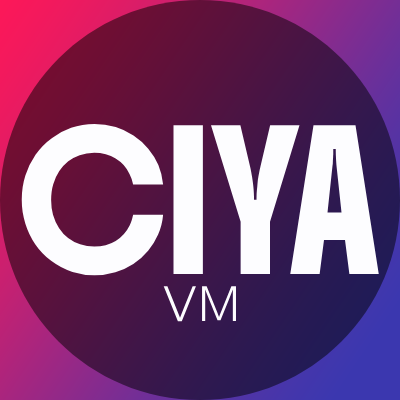

Now, we're still in the parser stage (aka developing the parser) and maintaining the project foundation (like the lexer, repl, README, etc.). And we're avoiding AI in this repo, so please don't use it. And lastly, feel free to commit to any of our repos (Like the web-app or the main code). Project button is here, please click it: Source!